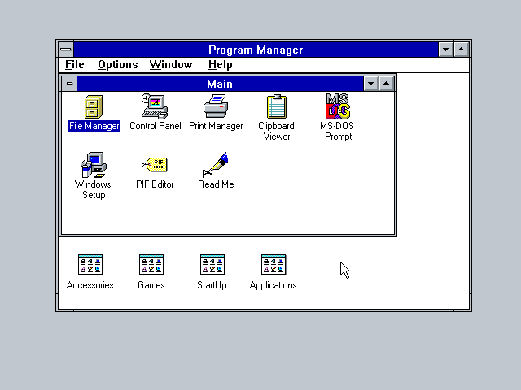
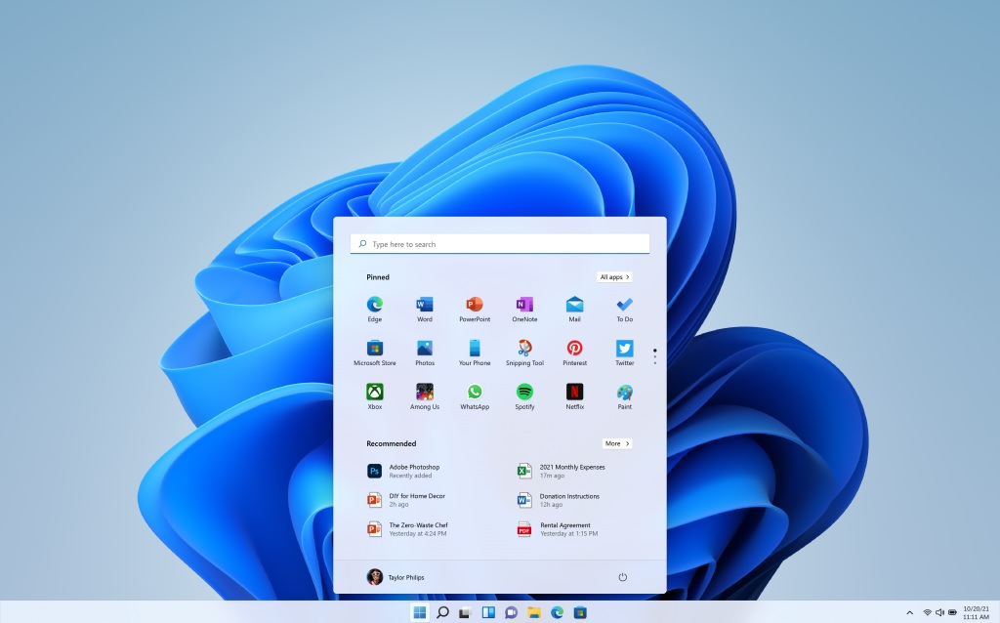
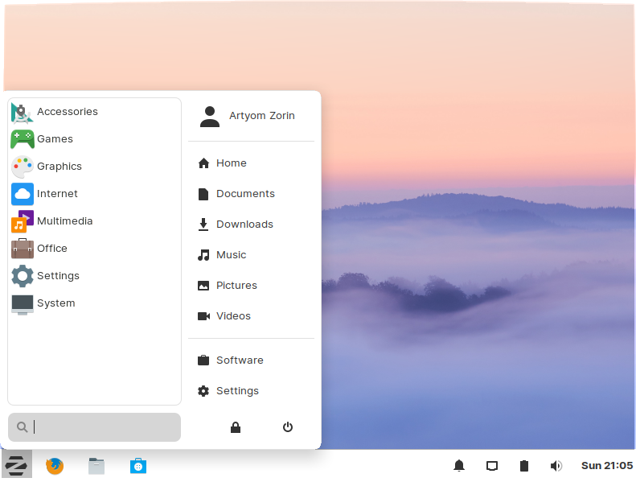

➤O que é um software?
• Um software é um serviço computacional utilizado para realizar ações nos sistemas de computadores. Ou seja: Um software é todo programa presente nos diversos dispositivos (computadores, celulares, televisores, entre outros).
• Chrome, calculadora, Windows Media Player, Microsoft Word, AutoCAD, Adobe Photoshop.
➤Sistemas Operacionais
• O sistema operacional é um software, ou um conjunto de softwares, que tem como papel gerenciar e administrar todos os recursos presentes em um sistema. Isso envolve desde os componentes do hardware e sistemas de arquivos até programas de terceiros.
• Linux, Windows, Android, macOS, UNIX.
➤Software de progamação
• Softwares de programação são softwares que permitem que programadores criem outros programas, através do uso de linguagens de programação. Eles fornecem ferramentas e soluções para testar, compartilhar, gerenciar e até de facilitar a escrita dos códigos.
• Java, PHP, Pascal, C+, C++

➤Software de sistema
• O software de sistema é um conjunto de informações processadas pelo sistema interno de um dispositivo que permite a interação entre usuário e o hardware. Também é responsável por gerenciar a eficiência de desempenho do aparelho.
• Windows, Android, iOS

➤Software de aplicação
• Software aplicativo ou aplicação, é o software projetado através de Linguagem de programação para executar um grupo de funções, tarefas ou atividades coordenadas para o benefício do usuário.
• Chrome, calculadora, Windows Media Player, Microsoft Word, AutoCAD, Adobe Photoshop.
➤Software Livre
• Software livre é o software que concede liberdade ao usuário para executar, acessar e modificar o código fonte, e redistribuir cópias com ou sem modificações.
• Banco de dados MySQL, programa de escritório LibreOffice, e-mail gratuito Thunderbird, sistema operacional Linux, linguagens Java e PHP.

➤Software Web ou Web App
• Web Software é um software que você usa pela Internet com um navegador web. Você não precisa instalar nenhum CD, fazer download ou mesmo se preocupar com atualizações.
• Google Drive, Gmail, Evernote Web, Microsoft Office 365, Canva Web.
➤Software de Inteligência Artificial
• Os softwares de inteligência artificial, ou software IA, imitam o comportamento humano e os padrões de aprendizado. Um programa de inteligência artificial pode ser utilizado em várias áreas de negócios, desde atendimento ao cliente e vendas (na forma de chatbots) até análise de dados e automação de tarefas de TI.
• Assistentes de voz como Alexa e Siri, algoritmos de redes sociais, ferramentas de reconhecimento facial como Face ID

➤Windows 1.0
•A primeira versão do SO foi lançada no longínquo ano de 1985 e era mais uma extensão do MS-DOS do que um software completo. Ele se caracterizava pelo modelo colorido na tela e aplicações como bloco de notas e até um Paint. Ele não permitia a sobreposição de janelas, por exemplo, e por isso todas elas ficavam expostas lado a lado.

➤Windows 2.0
•O Windows 2.0 chegou ao mercado em dezembro de 1987 e, tanto como o seu predecessor quanto o seu sucessor, usava uma estrutura de computação em 16 bits. Ele apresentou melhorias na interface, como a possibilidade de sobrepor janelas de programas, atalhos de teclado e suporte a VGA.

➤Windows 3.0
•Sucessor do Windows 2.0, que trouxe poucas alterações em relação ao primeiro, o 3.0 foi lançado em 1990 com melhorias de memória. Ele também se destacou pelo visual mais limpo, melhor organização de arquivos e apresentou ao mundo o Campo Minado, que viria a ser um destaque nos computadores pré-internet.
➤Windows 95
•Considerado um dos sistemas operacionais mais importantes da história, o Windows 95 abriu uma nova era para a Microsoft. Ele foi programado em 32 bits e trouxe melhorias que incluíam o sistema plug and play, recursos de acessibilidade e o navegador Internet Explorer.Lançado em agosto de 1995, o sistema foi o primeiro com o menu Iniciar, que permanece até hoje, e foi o responsável por ajudar o computador a se tornar um item popular nas casas das famílias do mundo todo.

➤Windows 98
•O Windows 98 aprofundou a revolução que o seu antecessor começou. Disponibilizado em junho de 1998, ele era mais estável, tinha suporte a mais de um monitor e componentes USB, particionamento do HD, serviço Outlook de e-mail, modo de hibernação e mais. No mundo todo, ele foi o primeiro contato de muita gente com o PC, já que ainda estava em muitas máquinas mesmo após a virada do século.

➤Windows 2000
•O Windows 2000 foi lançado em fevereiro de 2000 e consolidou o fim definitivo da nomenclatura "NT". O Windows NT, que começou a ser disponibilizado em 1993, era voltado para usuários corporativos, servidores e workstation, e não para o público geral. Por causa disso, sua menção é importante, além de ter trazido recursos importantes e novos sistemas de segurança.

➤Windows XP
•O Windows XP foi lançado em outubro de 2001 e à época era bastante inovador, principalmente no quesito visual. Ele apostou em um menu Iniciar verde e barras azuis que se tornaram bastante populares entre os usuários.Entre as várias novidades que ele apresentou em suas versões, havia a opção de alternância de contas de usuários sem fechar arquivos abertos, suporte para DSL e wireless. Ele popularizou programas do Windows Media Player, já que CDs poderiam ser lidos pelos drives e tocados no programa. Seu wallpaper, uma fotografia de planícies na Califórnia, tornou-se uma das imagens mais famosas da era da internet.

➤Windows Vista
•O Windows Vista teve um hiato bastante grande em relação ao anterior, se desconsiderarmos as atualizações e novas versões do XP. Ele foi lançado em novembro de 2006, apresentando uma nova estética de janelas transparentes e melhores recursos de segurança.Apesar disso, ele não foi tão bem recepcionado porque muitos usuários reclamavam que ele deixava o computador lento, o que fez muita gente continuar usando o XP por mais um bom tempo.

➤Windows 7
•Lançado em julho de 2009, o Windows 7 foi recepcionado de maneira um pouco melhor na comparação com o Vista e melhorou tanto o esquema visual quanto o desempenho do sistema operacional. Ele também se destacou por apresentar recursos como suporte a telas touch screen e multi-touch, leitura de Blu-ray, Windows Defender, modo Windows XP e mais.

➤Windows 8
•Apesar de também não ter sido muito popular, o Windows 8 trouxe mudanças que podem ser vistas até hoje no software da Microsoft. Ele foi lançado em outubro de 2012 e remodelou por completo a interface do sistema operacional, trazendo um novo sistema de widgets, janelas retangulares e a remoção do clássico menu iniciar, que foi bastante polêmica.Apesar disso, ele começou uma importante integração com os smartphones, que na época já estavam em alta. Ele era compatível com o Windows Phone, o sistema operacional para celulares da Microsoft, e tinha integração com vários apps mobile.

➤Windows 10
•O software mais recente da Microsoft foi lançado em julho de 2015. Ele trouxe de volta o menu Iniciar e tem como um dos principais diferenciais o foco multimídia, que pode ser visto na integração com o Xbox, notebooks e tablets. Outra grande novidade que ele apresentou foi a assistente virtual Cortana.De acordo com o site da Net Marketshare, ele é o SO mais utilizado no mundo atualmente, estando em mais de 66% dos computadores ao redor do globo. Logo atrás está o Windows 7, que mesmo mais de dez anos após o seu lançamento ainda está presente em 17% dos PCs.

➤Windows 11
•Nesta quinta-feira (24), a Microsoft apresentou o futuro do seu produto mais popular. Apesar de ter sido anunciado hoje, ele será lançado no final de 2021 e chegará em uma atualização gratuita para quem tiver a versão anterior.O sistema operacional terá várias novidades, incluindo um visual mais moderno, mais segurança e velocidade, bem como um novo método de organização de janelas. Além disso, pela primeira vez na história, aplicativos Android estarão presentes na Microsoft Store, o que marcará o início de uma nova era de integração entre ecossistemas de apps.
➤Linux Mint
•Linux Mint é uma distribuição Linux criada a partir de uma comunidade baseada no Ubuntu. É amada por pessoas usuárias casuais e profissionais na área da tecnologia. Mesmo abandonado o suporte a versão 20 do Snap, o Mint ainda é bem popular.A interface que o Linux Mint usa é Cinnamon que não faz o usuário se sentir estranho. Para a maioria das pessoas que utilizam o Windows, o Linux Mint vai parecer bem confortável. Você consegue iniciar aplicativos clicando em um botão no canto inferior esquerdo.

➤Linux Ubuntu
•Desenvolvido por uma empresa chamada Canonical, o Ubuntu é baseado em um dos muitos derivados do Linux Debian. Esse software chegou ao mercado em 2004. As pessoas programadoras na época perceberam os destaques do sistema e sua facilidade na programação. A interface de linha de comando permitia que fosse usada uma sintaxe mínima para escrever programas. O Ubuntu tem três versões, todas desenvolvidas para diferentes propósitos. O GNOME é o gerenciador oficial do Ubuntu para a área de trabalho. Também temos por padrão o Firefox, LibreOffice, Gimp, Audacious e Rhythmbox para fechar a linha de aplicativos que vêm com o sistema. A versão mais recente atualmente é a 21.04 LTS, que também é chamada de Hirsute Hippo. Nessa nova versão existem diversas melhorias e mais apelo ao visual dos ícones. Ubuntu é a base das seguintes distribuições: Lubuntu Kubuntu Linux MintO Ubuntu é o melhor tipo de sistema operacional para pessoas que estão começando no mundo do Linux. Podemos começar utilizando os aplicativos mais comuns e, com o decorrer do tempo, aprimorar o uso.

➤Linux Deepin
•Deepin é uma distribuição baseada em Debian (era baseada em Ubuntu até a versão 15 lançada no final de 2015) que tem como objetivo fornecer uma interface elegante, confiável e amigável. Ele não inclui apenas o melhor que o mundo de código aberto tem a oferecer, mas também criou seu próprio ambiente de área de trabalho chamado DDE ou Deepin Desktop Environment, que é baseado no kit de ferramentas Qt 5. Deepin concentra muito de sua atenção no design intuitivo. Seus aplicativos desenvolvidos internamente, como Deepin Software Center, DMusic e DPlayer, são feitos sob medida para pessoas usuárias médias. Por ser fácil de instalar e usar, o deepin pode ser uma boa alternativa do Windows para uso doméstico e no escritório.

➤Kali Linux
•Offensive Security é a empresa responsável pelo Kali Linux. Ele por si só é uma distro Linux baseada em Debian. Foi projetado para ajudar principalmente profissionais da área de segurança com seus inúmeros testes. Vem com ferramentas como: Nmap Metasploit Framework Maltego Aircrack-ng Especialistas em segurança cibernética e estudantes são o alvo principal do Kali Linux. Principalmente, porque o Kali disponibiliza certificações que são reconhecidas pelo mercado afora, como a Kali Linux Certified Professional e Penetration Testing with Kali.

➤Manjaro Linux
•Manjaro Linux é um sistema operacional rápido, amigável e voltado para desktop baseado no Arch Linux. Os principais recursos incluem processo de instalação intuitivo, detecção automática de hardware, modelo de lançamento estável, capacidade de instalar vários kernels, scripts Bash especiais para gerenciamento de drivers gráficos e extensa configurabilidade de desktop. O Manjaro Linux oferece o XFCE como as principais opções de desktop, bem como KDE, GNOME e uma edição minimalista da Net para pessoas usuárias mais avançadas. Faça o download do Manjaro agora mesmo.

➤Linux Debian
•Debian é a distribuição mais antiga e mais popular do Linux. Como qualquer outro distro de peso, fornece uma ambientação muito agradável e rápida. Atualmente, sua última versão é a 11, que também é chamada de Bullseye. Sua versão estável é a recomendada para servidores e usuários desktop. Isso porque é mais estável e confiável, raramente você vai precisar perder o seu tempo tentando arrumar algum bug. Normalmente essa é a versão que você instala no seu computador. A versão de teste é contínua e oferece as versões mais atualizadas dos programas. É muito instável geralmente e provavelmente vai surgir algum bug no meio do caminho. Também não recebe nenhum tipo de patch de segurança.

➤Puppy Linux
•Puppy Linux é mais uma distribuição Linux. A diferença aqui é que o Puppy é extraordinariamente pequeno, mas cheio de recursos. O Puppy inicializa em um ramdisk e, ao contrário das distribuições de live CD que tem que extrair coisas do CD, ele carrega na RAM. Isso significa que todos os aplicativos começam em um piscar de olhos e respondem à entrada instantaneamente. O Puppy Linux tem a capacidade de inicializar através de um cartão flash ou qualquer dispositivo de memória USB, CD ROM, disco Zip ou LS / 120/240 Superdisk, disquetes, disco rígido interno. Ele pode até usar um CD-RW / DVD-RW formatado em várias sessões para salvar tudo de volta no CD / DVD sem a necessidade de nenhum disco rígido. Faça o download e teste a velocidade dessa distribuição.

➤Linux OpenSUSE
•O OpenSUSE é mais uma das distribuições Linux que tem como objetivo fornecer uma interface moderna e rápida para pessoas usuárias de desktop e desenvolvedoras de todo mundo.São dois ramos de desenvolvimento principais: SUSE Leap, que é a versão estável e que é voltada para as pessoas usuárias, como também para as pessoas desenvolvedoras. Tornando a escolha perfeita para quem quer ajudar no desenvolvimento de código aberto. Em contrapartida, temos o SUSE Tumbleweed, que seria a versão de teste contínua com as mais recentes versões de software e IDEs. O TumbleWeed é fácil para qualquer pessoa usuária avançada ou desenvolvedora de software, graças principalmente ao seu grande número de pacotes disponíveis.

➤Linux Lite
•Linux Lite é uma distribuição Linux amigável para iniciantes baseada no lançamento de suporte de longo prazo (LTS) do Ubuntu e utilizando o desktop XFCE. O Linux Lite é voltado principalmente para pessoas usuárias ativas do Windows. O objetivo é fornecer um conjunto completo de aplicativos para auxiliá-las em suas necessidades diárias de computação, incluindo um pacote de escritório completo, reprodutores de mídia e outros softwares diários essenciais.

➤MX Linux
•MX Linux é uma distribuição Linux feita para desktop baseada na branch “Stable” do Debian e é um empreendimento cooperativo entre o antiX e as antigas comunidades MEPIS Linux. Utiliza o XFCE como a área de trabalho padrão (com edições separadas do KDE Plasma e Fluxbox também disponíveis), é um sistema operacional de peso médio projetado para combinar uma área de trabalho elegante e eficiente com configuração simples, alta estabilidade e desempenho sólido.

➤Linux CentOS
•O Linux CentOS é mais um sistema operacional gratuito que tem como objetivo criar um ecossistema de código aberto confiável. Ele é baseado no RHEL, e é uma das alternativas do Red Hat Enterprise Linux por ser gratuito. A sua última versão estável é a 8.5.2111 e oferece muita confiança e estabilidade por utilizar o RHEL. Permitindo que as pessoas usuárias aproveitem todas as atualizações gratuitas.

➤Arch Linux
•Arch Linux é a distribuição que foi projetada para pessoas usuárias avançadas ou especialistas em Linux. Sendo possível configurar e personalizar o sistema da maneira que a pessoa usuária quiser. Podemos dizer também que o Arch é voltado para pessoas que gostam de ter controle sobre o seu sistema operacional. O sistema de versionamento do Arch é atualizado constantemente, ou seja, é contínuo, e se for necessário, você consegue atualizar todos os pacotes pelo terminal. É utilizado o gerenciador de pacotes Pacman e também temos o AUR (Arch User Repository) que é a comunidade detentora dos pacotes de software. A sua versão mais recente é a 2022.03.01.

➤Linux Zorin OS
•Zorin OS é uma distribuição Linux baseada no Ubuntu projetada especialmente para iniciantes no Linux. Possui uma interface gráfica de usuário semelhante ao Windows e muitos programas semelhantes aos encontrados no Windows. O Zorin OS também vem com um aplicativo que permite executar vários programas do Windows. O objetivo final da distribuição é fornecer uma alternativa Linux ao Windows e permitir que as pessoas usuárias do Windows aproveitem todos os recursos do Linux sem complicações.
➤Linux Slackware
•O lançamento oficial do Slackware Linux foi feito por Patrick Volkerding e é um sistema operacional Linux avançado. Foi projetado com o objetivo de ser um sistema fácil de usar e é principalmente estável.Inclui a maioria dos aplicativos mais recentes enquanto tenta manter um senso de tradição, proporcionando simplicidade e facilidade de uso junto com a flexibilidade e poder, o Slackware tenta trazer o melhor de todos os mundos. O Slackware Linux oferece a pessoas usuárias novas e experientes um sistema completo, equipado para servir em qualquer capacidade, desde uma estação de trabalho pessoal a um servidor em uma sala de máquinas.

➤Oracle Linux
•O Oracle Linux é uma distribuição Linux para a classe empresarial e é suportada pela Oracle que a constrói a partir dos pacotes do Red Hat Enterprise Linux (RHEL).Alguns dos recursos especiais do Oracle Linux incluem um kernel Linux desenvolvido sob medida e rigorosamente testado denominado “Oracle Unbreakable Kernel“, forte integração com os produtos de hardware e software da Oracle, incluindo a maioria dos aplicativos de banco de dados e todas as outras funcionalidades disponíveis no mercado.
➤Linux Fedora
•Fedora dentre as distribuições linux é a que mais se destaca por ser realmente simples e prover uma grande quantidade de aplicativos previamente instalados. Isso a torna uma distribuição muito amigável e que facilita a entrada de novas pessoas usuárias. É flexível e poderoso, baseado no Red Hat, também é utilizado como ambiente de teste da transição do Red Hat. Foi feito tanto para sistemas de desktop, servidores e ecossistemas IoT. É utilizado principalmente para fins de desenvolvimento e muito útil para pessoas desenvolvedoras e estudantes.

➤Tails Linux
•The Amnesic Incognito Live System (Tails) é uma distro baseada em Debian com o objetivo de fornecer anonimato completo na Internet.O sistema vem com várias aplicações de Internet, incluindo um navegador web, cliente IRC, cliente de e-mail e mensageiro instantâneo, todas pré-configuradas com a segurança em mente e com todo o tráfego anonimizado. Para conseguir isso, o Incognito usa a rede Tor para dificultar o rastreamento do tráfego da Internet.
➤Linux Raspbian
•Raspberry Pi OS (anteriormente Raspbian) é um sistema operacional gratuito baseado no Debian e otimizado para o hardware do Raspberry Pi (a arquitetura do processador ARMHF). Nesse sistema, temos um pouco mais de 35.000 pacotes pré-compilados em um formato agradável para fácil instalação em um Raspberry Pi. A primeira versão foi desenvolvida em junho de 2012, mas a distribuição continua ativa, desenvolvida com ênfase na melhoria da estabilidade e desempenho de todos os pacotes Debian possíveis.

➤Linux Pop!_OS
•Pop! _OS é uma distribuição Linux baseada no Ubuntu que utiliza o GNOME como sua área de trabalho personalizada. Pop! _OS é projetado para não ter nenhum item na área de trabalho, a fim de permitir que a pessoa usuária se concentre no trabalho. A distribuição é desenvolvida pelo varejista de computadores Linux System76.